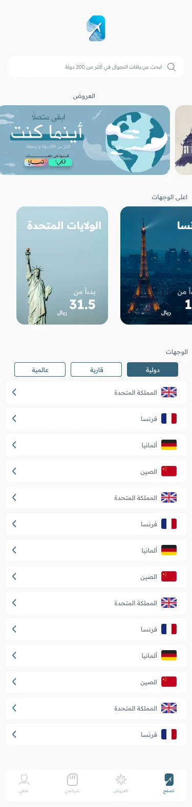
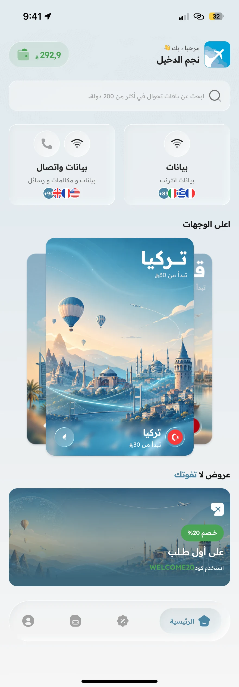
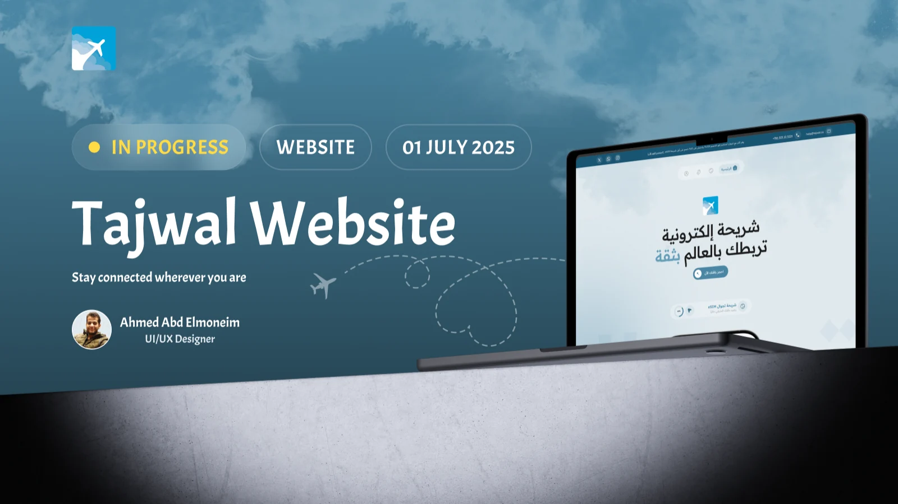

Start with the destination
Country and regional browsing give travellers two clear ways into the catalogue. Package information sits with the destination, so coverage can be considered before checkout.
eSIM · Mobile & web
A travel eSIM, from choosing a destination to getting connected.
v3.6.2 redesign · In development

01 / CONTEXT
Tajwal helps travellers buy and manage eSIM packages. I worked on the app and website redesign, alongside the dashboards used by the team behind the service.
02 / MY WORK
03 / DESIGN DECISIONS
Country and regional browsing give travellers two clear ways into the catalogue. Package information sits with the destination, so coverage can be considered before checkout.
Order confirmation leads into installation. QR, manual setup, and activation guidance belong to the same journey as buying the package.
The My eSIM area brings SIM details and package information back into the app after purchase. The journey continues beyond the payment screen.
BEFORE & AFTER / HOME SCREEN
The earlier home screen led with offers, destination cards, and a country list. In the updated screen, search stays near the top, followed by a choice between data-only and data with calls. A signed-in greeting and wallet balance add account context.


This comparison documents visible interface changes. Usability-test results and task-completion measures are not available for this case study.
BUSINESS CONTEXT / ANNUAL TOTALS
89,314 → 105,105
+15,791 · 17.7% increase
129,341 → 214,515
+85,174 · 65.9% increase
Earlier and later annual totals supplied by the designer from the product dashboard. Reporting years have not been specified. These figures describe business growth; they do not establish the effect of the redesign.


04 / DELIVERY
Tajwal is available on the App Store. The v3.6.2 redesign shown here is currently being implemented by the development team. My scope covers the app, website, and operational dashboards.
View on App Store ↗